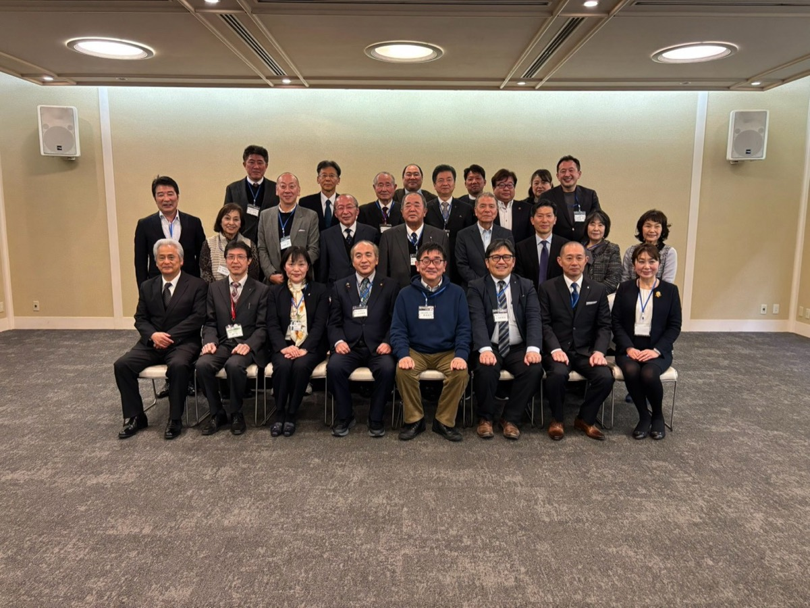

北九州市立大学の学生との勉強会を開催しました
学生のみなさんと、これからの教育や地域の関わり方について意見を交わしました。
REPORTS
講演会や勉強会、会議など、財団の活動の様子をご紹介します。
※ 一部の記事は本文がレイアウト確認用のダミーです（写真は実際の活動のものです）。
全 4 件
学生のみなさんと、これからの教育や地域の関わり方について意見を交わしました。

理事・評議員が一堂に会し、本年度の事業計画と各部会の取り組みを共有しました。

教育環境の充実や今後の取り組みについて、教育長をはじめとする関係者と意見交換を行いました。

立花高校の斎藤校長をお招きし、受容的教育と伴走型支援についてお話しいただきました。
条件に一致する記事はありませんでした。キーワードや絞り込みを変えてお試しください。